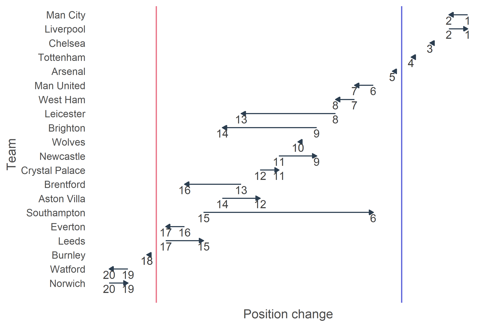

| Pos. | Team | MP | W | D | L | GF | GA | GD | Points |
|---|---|---|---|---|---|---|---|---|---|
| 1 | Liverpool | 38 | 21 | 16 | 1 | 44 | 14 | 30 | 79 |
| 2 | Man City | 38 | 22 | 11 | 5 | 45 | 11 | 34 | 77 |
| 3 | Chelsea | 38 | 15 | 23 | 0 | 34 | 10 | 24 | 68 |
| 4 | Tottenham | 38 | 16 | 17 | 5 | 33 | 17 | 16 | 65 |
| 5 | Arsenal | 38 | 17 | 12 | 9 | 33 | 21 | 12 | 63 |
| 6 | Southampton | 38 | 13 | 13 | 12 | 24 | 32 | -8 | 52 |
| 7 | Man United | 38 | 12 | 15 | 11 | 22 | 25 | -3 | 51 |
| 8 | West Ham | 38 | 11 | 17 | 10 | 27 | 21 | 6 | 50 |
| 9 | Newcastle | 38 | 10 | 19 | 9 | 25 | 24 | 1 | 49 |
| 10 | Wolves | 38 | 9 | 21 | 8 | 18 | 15 | 3 | 48 |
| 11 | Crystal Palace | 38 | 12 | 12 | 14 | 21 | 25 | -4 | 48 |
| 12 | Aston Villa | 38 | 11 | 14 | 13 | 21 | 25 | -4 | 47 |
| 13 | Leicester | 38 | 9 | 18 | 11 | 27 | 30 | -3 | 45 |
| 14 | Brighton | 38 | 11 | 11 | 16 | 16 | 22 | -6 | 44 |
| 15 | Leeds | 38 | 9 | 13 | 16 | 16 | 35 | -19 | 40 |
| 16 | Brentford | 38 | 7 | 15 | 16 | 16 | 29 | -13 | 36 |
| 17 | Everton | 38 | 7 | 15 | 16 | 16 | 30 | -14 | 36 |
| 18 | Burnley | 38 | 7 | 13 | 18 | 17 | 27 | -10 | 34 |
| 19 | Norwich | 38 | 5 | 14 | 19 | 11 | 34 | -23 | 29 |
| 20 | Watford | 38 | 5 | 13 | 20 | 17 | 36 | -19 | 28 |
This study examined the team that wins the league if games ended at halftime and which teams would take the most advantage with a stoppage mid game in the Premier League. The analysis revealed that, if matches had concluded at halftime, Liverpool would have occupied the top position in the league standings, closely followed by Manchester City. Southampton made the biggest move as they moved nine places higher than their full time position in the league while Brighton and Leicester had the biggest drops, moving five places down. To investigate the correlation between these metrics and league standings, the paper involved the acquisition of Premier League data, the plotting of halftime results, and the measurement of ranking changes.
Before jumping into such an intriguing story, let’s have a look at the origin of this data and also the methods that I used to wrangle and clean data. First of all, this data was downloaded from the Premier League Match Data 2021-2022 via Evan Gower on Kaggle. According to Gower, E. (2021), this dataset includes a variety of match statistics from football games, including the date of the game, the home and away teams, and the halftime and fulltime scores. In addition to team performance measures like the total and on-target amount of shots, fouls, corners, and disciplinary actions (yellow and red cards), it also contains information about the referees. Overall, the dataset offers comprehensive insight into game results and important features of team performance.
To obtain plots and key results for this analysis, I executed the data cleaning process for each part separately. For the standing table at halftime, the data wrangling steps employ the full_season_stats function to compute aggregate statistics for each football team based on halftime performance metrics. The function utilizes dplyr operations, such as filter() and summarise(), to create separate summaries for home and away matches, focusing on metrics like match count (MP), wins (W), draws (D), losses (L), goals scored (GF), goals conceded (GA), goal difference (GD), and points accumulated (Points). The results for home and away matches are then combined using bind_rows() and subsequently aggregated with summarise_all(sum) to provide a complete season summary for each team. The loop iterates through all unique team names from the dataset (soccer$HomeTeam), applying the function and appending each result to half_time_results using rbind(). The resulting dataset is sorted using arrange() by descending points and goal difference, and a positional ranking is assigned via rownames_to_column(). For the plot, the data cleaning process begins by constructing a full-time league table (full_league_table) through iterative application of the full_season_stats function across all unique teams in the dataset. This function computes aggregate statistics, including matches played (MP), wins (W), draws (D), losses (L), goals scored (GF), goals conceded (GA), goal difference (GD), and points for each team, for both home and away matches. These summaries are then appended using rbind(). The resulting full_league_table is sorted in descending order by Points and GD using arrange(), and team positions are assigned using rownames_to_column(). Subsequently, a finish_time column is added to both the full_league_table and half_time_results to specify whether the data pertains to ‘full_time’ or ‘half_time’, and as a result, distinguishing the datasets when they are joined later.
For both football fans (like me) and English Premier League (EPL) fans, the competitive rivalry between Manchester City and Liverpool during the 2021–22 Premier League season made it a thrilling occasion. During the whole league, these two teams engaged in a persistent battle for supremacy, trading points at the top of the league standings. At the last round, Manchester City completed a surreal comeback when they score three times in quick succession to seal a 3-2 win over Aston Villa and also the title. Meanwhile, Liverpool, despite winning 3-1 against Wolverhampton Wanderers, finished the season only a point behind City in totality. It is undeniable that Manchester City won the title, but were they really that dominant to win all the first halfs? The dramatic competition stimulated me to find out more interesting insights on the first half of the league. This article aims to answer two key question: “Who wins the EPL if games ended at halftime?” and also “Which teams benefit most from half time interventions?”. Now, without keeping you waiting any longer, let’s dive into the analysis!
Who wins the EPL if games ended at halftime?
From Table 1, it is clear that Liverpool comes out on top, indicating that they play incredibly well in the first half, earning 79 points. Manchester City is next with 77 points, showing that they were dominant in the first forty-five minutes of the game but not as dominant as they were overall. It is quite interesting to note that Southampton rises to sixth place, which is far higher than where they would normally finish, showing that they play better in the first half of games. Teams that typically struggle in the first half, such as Brentford and Everton, are positioned far lower in this hypothetical standings.
Which teams benefit most from half time interventions?

As it can be observed obviously from Figure 1, Southampton made the most significant move as they moved up nine spots in the league from where they were at full time. With the largest drops and a five-place decline, Brighton and Leicester would not like this table. Between halftime and full play, the participating teams in the Champions League (top 4) and relegation zones (bottom 3) remained unaltered.
Conclusion
If games had concluded at halftime, Liverpool would have won the league, two points clear of Man City. Another interesting side fact is that even though they would finish third in the league, Chelsea would have an undefeated season if games lasted 45 minutes. Southampton experienced the most notable improvement, climbing nine positions from their full-time standing. In contrast, Brighton and Leicester faced the biggest declines, each dropping five places, making this scenario less favorable for them. Notably, the teams qualifying for the Champions League (top 4) and those in the relegation zone (bottom 3) remained the same between halftime and full-time standings. However, all of the aforementioned metrics pertain solely to the first half, providing only partial insights rather than a complete reflection of the match or the league’s outcome.
Thank you for reading. Please don’t hesitate to contact me via Facebook or Instagram if you have any questions or recommendations for my blog.